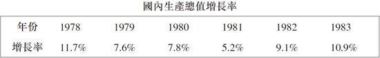
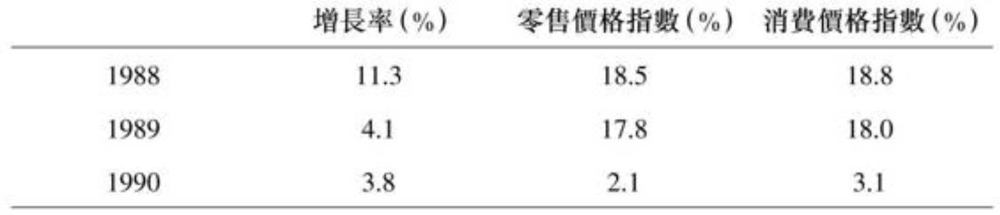

第16章 加快经济发展和开放：1982–1989
到1982年，陈云的紧缩政策已取得了成功，但有意思的是，这反而使邓小平更有理由推行陈云所不赞成的”中国经济超增长”政策。1980年中国的预算赤字高达财政收入的11.7%，到1982年已降至2.6%。外汇储备在1980年仅有40亿美元，到1982年已升至140亿美元。此外，1982年的粮食产量为3.54亿吨，比上年增长了9%。经济的实际增长率则达到7.7%，几乎是4%这一预定数字的两倍。1
邓小平和陈云在增长率上的分歧：1981–1983
到1981年，邓小平对陈云放缓增长率的经济调整政策逐渐失去了耐心。他开始谈论到2000年工农业产值要实现翻两番。他在一次会议上问道，如果要使国民生产总值从1980年到2000年翻两番，需要多快的增长速度。早已对此作过计算的胡耀邦立即回答：年均7.2%。2但是由于陈云、姚依林和掌控着各计划部门的谨慎干部限制着基建投资的规模，1981年的经济增长只有5.2%。
尽管邓小平避免与陈云公开哄翻3，但在华国锋失势后，邓在政治斗争中已经不需要陈云的合作，因而他开始加大推动现代化和经济扩张的力度。有一次，邓小平含蓄地提出这样一个问题：中国实际增长率与计划增长率相差那么大，这是不是有用？陈云则回答说，生产超过计划目标没有问题。事实上，在陈云看来，制定比较低的目标而后超越，比制定高目标要好。因为下面的干部正干劲十足，如果目标定得太高，他们会冲劲过大，超过经济能够承受的限度。结果会造成供应短缺和通货膨胀4，很快就会导致混乱，并使增长受阻。
1980年底，在讨论下一年的年度计划时，陈云的支持者姚依林说，尽管可以力争达到5%，但1981年可能实现的最高增长率是4%——而从长远看可能达到的最快增长速度是年均6%。胡耀邦则尽力维护邓小平的目标，于是他反驳说，如果是这样的话，所有关于到2000年翻两番的讨论就毫无意义了。5在1981年12月的全国人大四次会议上讨论”六五”计划（1981年–1985年）和1982年的年度计划时，有关增长速度的分歧如此严重，乃至全国人大既没有通过年度预算，也没有明确”六五”计划的增长目标。6
1982年12月上海全国人大代表团去陈云在上海的冬季寓所看望他时，他用黄克诚的一个比喻来说明自己的观点：”〔经济〕就好比一只鸟，鸟不能捏在手里，捏在手里会死，要让它飞，但只能让它在笼子里飞。没有笼子，它就飞跑了。”对于那些想使经济更加开放、更快增长的人来说，陈云这种”鸟笼经济学”成了阻碍市场发展的过时思维的象征。陈云后来解释说，他所说的管制是指宏观调控；鸟笼可以是一国一省，在某些情况下也许比一国还大。7然而这种解释并没有终止对他的批评。
尽管陈云的批评者有时会让人觉得他反对一切改革，但事实并非如此。陈云支持赵紫阳在四川率先进行的让企业自负盈亏的改革；他赞成中央在原材料采购和产品销售方面给予企业更大自由；他并不反对在农村实行包产到户，并支持在工商业领域放松管制，让下级干部有更多的自由进行探索；他还同意在价格上要有一定的灵活性，使一些当时仍由计划管理的小商品转而进入市场交易。他也想让经济保持活力。8但是陈云认为，自己有责任维护计划体制的良好秩序，使重点工业部门得到它们需要的资源，并确保通货膨胀不至于失控。在这些问题上他表现得很固执。
在中共十二大（1982年9月1日至11日）和随后的全国人大（1982年11月26日至12月10日）公布的文件中已经反应出邓小平和陈云在增长速度目标上日益扩大的分歧。党代会上的大多数文件都是由谨慎的计划干部起草的。但在邓小平的坚持下，大会接受了到世纪末让工农业生产总值”翻两番”这一目标。邓小平坚定地重申，计划增长率大大低于实际增长率不是好事。9作为一名严守纪律的党员，陈云没有公开批评邓小平在本世纪末翻两番的计划，但是他也确实没有表示认同。他再次强调未来20年的经济建设应当分为两个阶段：前十年用较温和的增长打基础，后十年再谋求更快的增长。10
经过修订的”六五”计划（1981年–1985年）在全国人大会议上获得通过，它反映着谨慎的计划干部的胜利。未来五年的年均增长目标被确定为4%到5%。同期的基本建设投资为230亿美元，与第五个五年计划相比几乎没有任何增长。投资的重点是能源和交通运输，同时也将增加教育、科学、文化和卫生保健的支出。
此时，胡耀邦认为他能够为现代化作贡献的最佳方式之一，就是走遍全国所有县市，给地方干部打气。他听取他们反映的问题，尽力消除发展经济的障碍。根据他对农村的视察，胡耀邦确信各地有能力发展得更快。针对陈云所主张的80年代增长要慢一些，以便为90年代更快的增长打好基础，胡耀邦回应说，现任的领导人应当在80年代全力以赴，以免给90年代领导经济工作的人留下不切实际的目标。在陈云和支持他的谨慎的计划干部看来——甚至包括赵紫阳在内——胡耀邦竭力支持地方干部的做法过于随心所欲，而且他对遏制通货膨胀也没有给予足够的关注。
胡耀邦在各地的视察使他和陈云发生了冲突。虽然两人在平反错案上曾经合作得很好，而且胡耀邦对陈云仍很恭敬，但陈云对胡耀邦的意见越来越大。在1983年1月12日一次讨论年度计划的会议上，邓小平再次指出，1981年开始的”六五”计划仍把年增长率定为3%到4%，可是实际增长率比这高了一倍多。
 邓小平再次问，计划和实际情况差别如此之大，这合适吗？计划干部回答说”这样不会坏事”。11邓小平于是采用他的典型风格：既要避免对抗，又要让他的战略占上风。他并不公开批评陈云和党的决定，但也不限制地方干部想方设法加快发展，不阻拦胡耀邦下去视察。面对他所不赞同的党内共识，邓小平的对策一贯是：”不争论，大胆地闯”。
赵紫阳：构思改革
陈云在1980年同意赵紫阳应当有个班子研究新时期的经济问题，他承认此时已不同于他创建计划体制的时期了（对赵紫阳的介绍，参见本书附录〈邓小平时代的关键人物〉）。赵紫阳刚来到北京时赞成陈云的经济调整政策，陈云因而也支持赵紫阳让企业经理有更多自主权和在农村实行包产到户。在更一般的意义上，陈云也很欣赏赵紫阳”讲北京话”的努力，欣赏他愿意放弃多年来形成的地方领导人的思维方式，转而关注全国经济大局。
赵紫阳希望避免政治斗争。虽然身为总理，他并不干涉陈云和谨慎的计划干部领导计划经济的日常工作，而是和他的智囊团一起在常规的官僚体系之外，专注于如何引导相对封闭的经济变得更加开放这一重大问题。当赵紫阳和他的智囊班子在北京工作了两三年后，自然而然地形成了对于经济发展方向的新观点，而邓小平也开始转向赵紫阳征求意见。此时邓小平已经对陈云和谨慎的计划干部领导下的缓慢增长失去了耐心，他开始离陈云而去，转而借助于赵及其智囊团，让他们提供基本经济政策的指导。赵紫阳直接同日本顾问、世界银行召集的各国经济学家和经济官员展开合作，为中国应当如何进行转型构建思路。当时尚无任何社会主义国家成功地——并且没有造成严重动荡地——从计划经济转型为可持续的、开放的市场经济。因此，当世界银行官员和来自世界各地的著名经济学家来到中国时，最重要的会谈都是与赵紫阳进行的。赵紫阳虽然没有接受过正规大学教育，但外国人对他的学识、求知的好奇心、掌握新观念的能力以及分析水平都留有深刻印象。12美国著名经济学家佛利民（Milton Friedman）1988年访问北京时，与赵紫阳的会面原本预期为半小时，但这次只有赵紫阳、佛利民和译员在场的会谈却整整进行了两个小时。佛利民在谈到赵紫阳时说：”他对经济形势和市场如何运行都很有洞见。”佛利民把这次会见描述为”令人着迷”。13
赵紫阳的智囊团之一是一个小型的（30人）中国农村发展问题研究组，它在农村改革中发挥了关键作用。它最初是由一群有见识的青年才俊组成的讨论小组，他们在文革期间”下放”农村多年，对农村的情况有深入了解。1981年11月它成为中国社会科学院农村经济研究所下属的独立机构。14此后又并入国务院农村发展研究中心，参与过制定包产到户政策的工作，后来每年都为中央起草有关调整农村政策的1号文件。15
赵的另一个智囊团是体制改革委员会，它是为研究根本性的体制改革而成立的。由于它能就改革官僚部门建言献策，一些官僚对它有可能提出的建议很敏感。它最初是中国科学院下属的一个体制改革研究小组，1980年改为”国务院体制改革办公室”，受赵直接领导；1982年5月更名为”国家经济体制改革委员会”，升格为部级单位。在赵紫阳的领导下，它到1984年已有大约100名官员。16忠诚且勤于钻研的官员鲍彤，最初是由中组部派到赵紫阳手下任总理秘书，此时开始成为赵紫阳班子的主管。
在智囊团里为赵紫阳工作的人，都十分尊重和钦佩赵紫阳。他们喜欢他毫不做作的随和作风、不拘一格广纳贤言的开放态度，以及能把想法转化为推动国家前进的实际政策的能力。
向国外学习
1978年6月23日，邓小平在听过教育部派遣留学生计划的汇报后说，要把出国留学生的人数增加到几万人。邓认为，中国要想快速实现现代化，就必须学习和采用在国外已经证明为行之有效的思想观念。苏联人由于害怕”人才流失”，不太愿意让有才华的学者和学生出国。毛泽东则对西方紧闭国门。甚至蒋介石也曾担心一些最聪明的年轻人会很快流向国外。然而邓小平对于人才流失从来不担心。正因为如此，在向发达国家学习现代化的秘诀这一点上，除了日本和南韩外，没有任何发展中国家能够在广度和深度上与邓小平领导下的中国相比。而由于中国庞大的人口基数，它在学习外国的规模上很快就超过了日、韩两国。
邓小平派官员出国考察，邀请外国专家成立研究国外发展的机构，鼓励翻译外国文献——所有这些举措都规模宏大。日本和南韩的领导人担心国内的公司会被外国公司的竞争压垮，邓小平则不同，他鼓励外国公司在中国创建现代化工厂，帮助培训中国的管理者和工人。他充分利用那些能够帮助中国了解国外发展的海外华人。最重要的是，他鼓励年轻人走出国门到海外留学。从1978年到2007年的30年间，有超过100万的中国学生出国留学。到2007年底，其中大约有四分之一已经学成回国。17为了学习外国经济发展经验，邓小平同意由赵紫阳会见经济学家；他本人更喜欢跟科学家，以及包玉刚、松下幸之助和大卫・洛克菲勒（David Rockefeller）这样的成功商业领袖交谈，从他们那儿获取如何使中国进步的想法。他还会见从事过国家经济计划工作的外国人，如日本的大来佐武郎和下河边淳。从1979年初开始，中国的资深学者每隔几天就出版一期报告，即《经济研究参考资料》，概述对中国经济有重要意义的国外发展状况。而出国的代表团也会撰写考察报告，上呈给国家领导人。
在中国研究国外的经济发展经验方面，没有任何机构发挥的作用能与世界银行相提并论，而世行在中国发挥的作用也超过了它所帮助的任何其他国家。181980年中国大陆取代台湾重新获得在世行的中国席位后，世行行长罗伯特・麦克纳马拉（Robert McNamara）访华，为发展双方的新关系铺路。麦克纳马拉说过，没有中国的世界银行不是真正的世界银行，他顶住了美国政府要求放缓中国加入世行的压力。中国官员当时仍然担心外国会为自身的目的利用中国，但是麦克纳马拉的独立态度使他们相信，世界银行并不代表任何单个国家的利益。
麦克纳马拉与邓小平会面时，邓对他说，中国未来与世行的关系中，观念比钱更重要。邓说，中国的现代化是必然的，但通过与世行合作中国能更快地发展。在讨论世界银行驻华首席代表的人选时，邓说，他不在乎首席代表是哪国人，他只希望是一个最胜任的人。19
邓小平会见麦克纳马拉后，中国与世行的关系发展迅速。一个月后的1980年5月15日，中国通过世行的投票表决正式成为其成员国。世行的多数成员国是在1945年它成立之初就加入的，世行对他们的了解已经有多年的积累。但中国是个巨大的国家，而且取代台湾之前又与世行没有交往，因此世行在向中国提供贷款之前，必须首先对中国经济创建起更好的了解。1980年10月，世行作出了一个在其历史上首创性的决定：它组织了一个由30位世界级专家组成的团队，前往中国进行为期三个月的考察。这些专家的研究特长包括中国经济、农业、工程、卫生和教育等各个领域。中国也组织了一个与之相对应的专家队伍和他们一起工作，其中就有后来担任总理的朱镕基。朱是自愿加入中方团队的，因为他将之视为学习的好机会。
邓小平本人的支持使中方团队的成员不必再担心将来可能受到向外国人泄密的指控。为了增强双方的信任，避免被中方猜忌有不可告人的动机，世行人员在中国期间没有举行任何未邀请中方参加的会议。中方团队及其在北京的上级深知他们被委以打开国门的重任，他们热切地希望弄清中国需要面对的独特问题。世行团队也清楚他们在中国对外开放中扮演的历史性角色，同时意识到这是个了解中国的特殊机会，因此也努力与中方创建良好的长期合作关系。这个考察计划是世行到那时为止承担过的最大的针对单个国家的研究项目。世行当时还没有像后来那样变成一个庞大的官僚机构，因而给予它的下属团队相当大的自主权去适应当地需要。麦克纳马拉访华后不久，会讲汉语的菲律宾华人林重庚被任命为世界银行中国项目的首席经济学家。他是哈佛经济学博士，有在东南亚和非洲为世行工作的经历；他也是1980年世行团队在中国的实际领导者；1985年世行在中国设立驻京办事处后，他出任该办事处的首任驻华首席代表，并一直任职到1990年。他把中国和世行在1980年代的特殊关系描述为”天造地设”。20
在中国的三个月里，世行团队与负责经济工作的中方官员进行会谈，还到地方进行实地考察。尽管中方负责接待的是财政部，但他们有机会和所有主要经济部门的官员会面，其中既有建设派，也有平衡派。国家计委和国家统计局官员在中方团队中发挥着重要的领导作用。中方官员都没有受过西方经济学理论的训练，但他们有管理计划经济发展的经验。西方专家中很多人也都在发展中国家工作过，因此与其中国东道主一样，更为关注具体制度环境下的实际情况，而不是学院派经济学家所提供的理论性解释。
世行团队返回后，根据与中方所做的联合研究撰写了一份报告。报告讲述了1949年后的中国经济历史，介绍了中国的政策，并对中国经济中适合或不适合作出政策改变的领域作了认真区分。在1981年3月完成这个三卷本的报告后，世行人员立刻与中方进行讨论，并在6月提交世行董事会，为后者作出给中国第一笔贷款的决定提供参考。除了中国的专家外，赵紫阳和其他高官也读过这份报告；后经中国政府批准，该报告得以公开发表。
当时首当其冲的大问题是，如何在维持中国经济运行的同时，使它转向更加开放、更少管制的体制。世行报告建议中国要更加注重利用价格，从价格入手促进更有效的投资决策，推进更灵活的对外贸易。它还建议让国内人口更加自由地流动，使劳动力的使用变得更有效率。但是它也主张价格变动和其他改革都不宜操之过急。这个团队不主张全面迅速的市场自由化或私有化。对于中方人员来说，参与这项研究，使他们有机会了解具有全球发展经验的经济学专业人士的视野，并学习用新的眼光重新审视自身的体制。
中国成为世行成员后双方谈判达成的第一笔借款是对高等教育的援助。邓小平一向重视培训，因此这个结果并不令人意外。在贷款之外，世行还设立了专门计划，帮助培训即将处理各种经济问题的中国专家。在这方面，中国与世行的经济发展研究所合作，由后者每年举办人员培训课程。世行还在联合国开发计划署、继而在福特基金会资助下，在牛津大学设立了为期一年、专门培训中国经济学家的项目。从1985年到1995年，这项计划培训了将近70名经济学家，其中大多数后来都身居要职，领导着中国的经济发展。福特基金会还资助中国经济学家在美国学习。作为对中国的进一步援助，世行还利用它与全球经济学家无可比拟的关系网络，应中国要求组织不同领域的专家进行会谈。
1980年代初，中国负责调整经济体制的官员最初想从东欧国家寻求改革模式。他们首先关注的是南斯拉夫，1983年又将兴趣转向匈牙利把不同部门的所有计划都合为一体的”全面改革”。中国派出两个代表团访问匈牙利，研究它的改革规划，匈牙利也派了一批人到中国介绍他们的改革经验。熟悉匈牙利问题的人认为，中国应当使用更多的经济手段取代行政手段，进一步向地方放权，并允许更加多样化的所有制形式。匈牙利和日本一样，也采用了以确定产出指标为主的”指导性计划”，逐步摆脱了从前的指令性计划——即提前为各产业部门精确规定具体的生产投入。21然而，在探讨东欧经验的同时，一些中国官员也开始怀疑，东欧模式是否能够解决中国面临的复杂问题。
1982年8月应中方请求，世界银行将东欧和其他国家既有理论眼光又有实践经验的著名专家召集到浙江省的莫干山，探讨社会主义体制改革的整体问题。中方人员以薛暮桥为首。来自波兰、捷克斯洛伐克和匈牙利的东欧知名经济学家——包括弗拉吉尔兹・布鲁斯（Włodzimierz Brus）——分别介绍了他们的观点。会上进行的讨论和会后组织的外国顾问对中国各地的考察，大大加深了人们对东欧改革模式是否适用于中国的疑虑。东欧专家此前的结论是，如果只进行局部改革，会造成对下一步改革的抵制，因此必须一次性地进行全面改革。可是，中国的农村改革已经呈现出似乎不可逆转的积极成果，因此没有必要急于进行一揽子的全面改革。会后东欧的学者们去中国各地考察，开始同意中国东道主的观点，即一次性大胆进行改革的东欧模式在中国行不通，因为中国太大，各地情况千差万别。中国唯一切实可行的道路是逐步开放市场和放开价格，然后再进行渐进式的调整。与会者的观点先汇报给赵紫阳并获得了他的认同，然后再上报给邓小平，邓也支持赵紫阳关于渐进改革、而不是一揽子改革的意见。
1983年，取代麦克纳马拉于1981年担任世界银行行长的克劳森（A. W. Clausen）访问北京。邓小平对他说，他认为世行1981年的报告很有意思，也很有用。随后邓请世行帮助评估中国到2000年生产总值翻两番的可行性。速度问题似乎一直是邓小平的中心问题。他希望经济尽可能快地增长，又要避免大跃进的危险；他担心中国的干部像过去那样盲目乐观，所以要听听外人的意见。他希望世行再次承担一项研究，根据全球经验对中国未来20年实现这一目标考虑不同方案。应邓小平请求，1984年世行再度派出人员齐备的代表团前往中国，仍由林重庚带队。依据中方合作者、世行人员及相关顾问的研究，世行于1985年发佈了一份报告。这份报告对制定”七五”计划（1986年–1990年）起了重要作用。22它的结论是，20年内翻两番的目标是可行的。这无疑让邓小平感到放心。报告认为，中国通过重点抓工业生产，或者通过促进包括服务业在内的各部门平衡发展，都有望实现这一目标。中国选择了以工业作为重点的道路。
1984年召开了又一次由中青年经济学家参加的莫干山会议，讨论价格改革等问题，但这次会议世行人员没有参加。23会议的结论是支持价格双轨制，即一轨价格适用于国家计划内产品，另一轨价格则要适应市场的变化。完成定额的国营企业可以将超额部分以市场定价出售。这样一来，很多企业会转而以市场为导向从事生产，而在向市场转型的过渡期又可以依靠计划内价格获得一定的稳定性。有些世行官员批评价格双轨制，因为这会给国营企业的干部制造迅速牟利的机会，他们可以用计划价格购买商品，再以高价在市场上出售。但中国高层官员认为，他们有把握用行政处罚手段控制住腐败。
1985年，在邓小平取得政治上的胜利后，中国官员再次请世界银行召集专家，为中国从管制经济转型为由市场发挥更大作用的经济提供指导。中外专家在一条名为”巴山轮”的船上开了一个星期的会。在这条从重庆沿长江顺流而下、经三峡抵达武汉的轮船上，他们进行了正式和私下的紧张讨论。世行召集的西方人中，有诺贝尔经济学奖得主詹姆斯・托宾（James Tobin），他介绍了运用宏观经济手段、尤其是通过调节需求控制市场的可能性。弗拉吉尔兹・布鲁斯和首次访问中国的雅诺什・科尔奈（János Kornai）则介绍了东欧在调整中央计划经济体制的过程中出现的问题。会议结束时，早已对东欧模式在中国的适用性持怀疑态度的中方与会者进一步确认，社会主义经济中的结构问题——如允许业绩不佳和重复生产的企业继续生存的”软预算约束”——是计划体制内在的普遍性的问题。这标志着中国结束了对采用东欧改革模式的探讨，转而以更强的意愿接纳市场的作用。
会议之前中方尚未充分理解的一个关键问题是：如何采用其他货币和财政手段来调节市场，以避免中国人一向认为的资本主义制度所固有的大起大落。托宾的发言使他们相信，可以运用宏观经济手段调控市场体系。会后，中国经济学家在引入宏观调控24手段的同时，对继续扩大市场作用也更加胸有成竹。
由于会议之前通货膨胀已很严重，中国很快采用了从这次会议中得到的主要教益：即运用宏观调控驯服通货膨胀。赵紫阳总理看过会议报告后接受了这一结论，经邓小平认可后便开始着手实施。
1980年代初期，中国领导人在探讨东欧经验和利用世界银行顾问的同时，也在研究日本经验。尽管日本是世行成员国，它与中国主要以双边的方式进行合作，而合作规模则超过中国与任何其他国家。中国对台湾和南韩的现代化经验也有兴趣，但中国大陆直到1980年代后期才与之有直接交往，因此台湾和南韩在1980年代初的经验对当时的中国没有起到太大作用。
邓小平1978年10月访日之后，大来佐武郎于1979年1月到访北京。作为一位经济规划官员，他在帮助亚洲国家经济发展方面极富经验。他此行要与谷牧探讨成立日本顾问团的计划，还要在更广泛的层面上探讨日本在中国发展中可能发挥的作用。大来佐武郎出生于辽宁省大连市，工程学出身，曾在日本经济安定本部扮演过核心角色。这个部门曾经为日本经济在二战后脱离战时经济管制和对抗严重短缺提供指导。1955年后安定本部并入日本经济企划厅，后者负责为日本经济提供指导性计划。大来佐武郎与谷牧商定，在当时中国正在进行的经济转型过程中，他将率一批有经验的日本官员同以马洪为首的中方官员每年举行一次会谈。1979年12月大平正芳首相访华时，当时已担任外相的大来佐武郎陪同来访。邓小平对大来开玩笑说，你当了外相，还能继续给中国当顾问吗？确实，大来任外相期间，这些会谈一度短暂地中止，但在他卸任后很快于1980年7月恢复。日本国土厅前任长官下河边淳也是大来佐武郎的日本顾问团成员，他向中国介绍了日本政府如何通过创建制度及保障必需的资源，推动各地区均衡持续地发展。25这个顾问团与中国经济官员的会议一直持续到1992年。
1979年初，中国效法日本成立了两个机构：质量管制协会和企业管理协会。这两个协会在北京为地方干部开办培训班，再由这些干部为各自地区的工厂经理培训工业管理、传授他们从日本人那里学到的观念。26尽管这些培训计划的作用难以具体评估，但是对中国那些习惯于办事慢吞吞的工厂经理和工人来说，这些榜样的存在，加之官员的大力鼓动，确实促成了生产效率和质量控制的改善。
1980年代，日本为中国提供的援助和在中国开设的工厂多于其他任何国家。日本的在华工厂为中国树立了尺规，用以衡量中国在实现高效工业生产上取得的进展。中国在学习现代科技上主要盯的是美国，但中国工厂引进的新生产线中来自于日本的数量最多。池田勇人首相在1960年代提出的”国民收入倍增计划”，成了邓小平要求工农业产值在20年内翻两番的动力。自1974年以来，邓小平会见的日本代表团也多于其他任何国家。
中国经济官员在访日期间看到，消费需求成为日本工厂的生产动力，从而减少了国家作为工业产品分配者的功能，这给他们留下了深刻印象。结果是，生产消费品的中国工厂也得到指示，要求他们直接征求当地商业网点的意见，了解消费者愿意购买什么产品。27
尤其令中国官员印象深刻的是日本通产省的一项重要职能：它分析如何才能使不同产业的日本企业获取在国际市场竞争中所需的资源和技术，然后让企业发挥其自身的主动性来开发创新产品，以此推动整个国家的快速发展。邓小平访日期间，不但对日本企业内部的高度计划性感到惊讶，更让他吃惊的是这些计划手段远比中国更灵活、更能对市场变化作出反应。例如，通产省一方面会为大公司提供鼓励和支持，但同时也会让他们为争夺市场份额而相互展开激烈的竞争。
中国在1980年至1981年施行的经济调整政策，导致很多与日本签订的合同被取消、使日本公司与中方的合作被放缓（见第15章）。但1982年最困难的调整步骤完成后，中日关系又得以复苏。1982年5月底至6月初赵紫阳访问日本，除了寻求进一步投资和技术谘询外，也是为了恢复日本人对中国经济的兴趣。28日本通产省下属的日本贸易振兴会在中国设有若干个办事处，它们研究中国经济，辅助日本公司在中国当地发现蕴涵商机的领域，也为中国各个工业部门的经理和技术人员提供培训。
到1980年代中期，国外机器的引进已经带来了巨大变化。所谓”手工业式的重工业”，即工人光着膀子向炼钢炉填煤、用大铁锤把金属锻造成型的景象，被宝山钢铁厂里具有连铸29设备和电子控制系统的现代氧气转炉30所取代。现代生产线取代了用机床31逐个加工机器零件的工人，工业产出大幅增长。合资企业中与外国同行一起工作的中层管理人员学会了使用现代电子设备、运用最新的现代管理技术，也为增长的大潮作出了贡献。其中一些管理人员运用他们在外企学到的技能创办自己的企业。1980年代计算机在西方采用后，在中国企业中也迅速得到普及。
由日本、欧洲、香港和台湾公司（从1980年代后期开始）引入中国的新机器和新体制对其经济增长所产生的累积作用，至少与北京领导层进行体制改革的影响同样巨大。中国新的开放政策实际上是从国外引进了工业革命32、信息革命33和消费革命34。
邓小平的经济攻势：1984
对邓小平有利。不但粮食增产，而且纺织这一消费工业的重要部门也有了可观的增长，导致布匹配给制的结束 当经济运行良好时，邓小平更易于获得加快改革开放所需要的政治支持。当经济出现通货膨胀之类的问题时，陈云和谨慎的平衡派则会获得更大的势力，使他们得以收紧计划的缰绳，对抗通货膨胀压力。1982年和1983年经济增长开始加快，通货膨胀也得到了控制，气氛转而变得。依据官方数字，农民的人均收入从1978年的134元增加到了1984年的355元。35
在1983年6月26日至30日举行的中央工作会议上，邓小平高调提出要将投资比重提高到陈云和国家计委所建议的水平之上。361983年12月，已对谨慎的计划派感到不耐烦的邓小平说，对可能发生的事情进行科学预测是不可能的，如果只讲稳定就很难取得进步，没有一点闯劲，就不可能实现经济翻两番。37
在这种有利的气氛下，邓小平准备扩大开放其他沿海地区。1984年1月他去广东和福建视察时宣佈，经济特区的政策已经证明是成功的（见第14章）。电视镜头把深圳取得的令人瞩目的建设成就传播到全中国，为民众接受同年底其他沿海地区的开放打下了基础。
1984年5月，国务院发佈了《关于进一步扩大国营工业企业自主权的暂行规定》。这个授予国营企业更多自主权的方案基本上是由赵紫阳的智囊团成员拟定的。文件提出要运用包括价格和税收在内的宏观调控手段管理经济活动。长期以来支持给予企业更大灵活性的赵紫阳，也进一步扩大了企业在完成政府定额后参与市场的自由。
邓小平在1984年6月开始使用”有中国特色的社会主义”一说。这个宽泛且模煳的巧妙概念完全符合邓小平的基本思路：即扩展可以被接受的意识形态框架，使国家能够采取行之有效的政策。邓小平利用这个概念来推动其扩大市场、在工商科教领域进行全面改革的目标。38在1984年9月3日至10日的莫干山会议之后，采用价格双轨制的国营企业，获准扩大了对市场价格的使用。这使国企经理把更多精力放在能为企业带来更多利润的市场上，由此他们在计划体制仍为经济提供稳定产出的同时，也学会了市场经济。39在改革派（reformers）和保守派（conservatives）之间持续不断的角力中，主张扩大市场作用的改革派取得了进展。
在1984年国庆日，邓小平获得的民众支持达到了整个邓时代的最高峰。在那一年的国庆游行中，北京大学的学生游行队伍打出了一条写有”小平您好”的横幅。这是一种发自民间内心的友好问候，而街道两旁的群众也自发加入到”小平您好”的行列中。这句话和这个场景，和17年前红卫兵遵照上面的指示高喊”毛主席万岁”表达崇敬的做法形成了鲜明对照。1984年的这些学生自发地表达了全国人民的感情，他们感谢邓小平结束文革动乱，克服粮食短缺，改善了他们的生活，终于带领国家走上正轨。而且就在一周之前，邓小平签署了香港和平回归中国的协定。
国庆日十几天之后，邓小平充分利用这种高涨的民意，促使中共十二届三中全会批准了《关于经济体制改革的决定》，这是当时对经济改革最全面的阐述。它既包括宏观理论分析，也概述了为全面扩大市场铺路的措施。”决定”采纳了邓小平”有中国特色的社会主义”的说法，宣佈社会主义和资本主义的根本区别不在于搞不搞计划经济，而在于是否实行公有制。社会主义的目标不是平均主义，而是共同富裕。领导起草这份文件的赵紫阳达到了邓小平要求的目标：明确解释为何社会主义能够接纳市场改革。
《关于经济体制改革的决定》宣佈，将逐步减少政府定价，进一步发挥市场定价功能。40这个文件大大鼓舞了那些希望得到更大灵活性的各部委干部。邓小平在全会上讲话支持这一文件时指出，准备文件和斟酌用词上的大量艰苦工作都是别人做的，但他同意文件的全部内容。邓小平说，文件最重要的内容是”尊重知识，尊重人才”。他重申了实行开放的基本论点：中国历史表明，只有国家开放，才能取得重大进步（这个主题成为1988年6月的一部电视系列片《河殇》41的主题，它引发争议并造成了超乎寻常的影响）。42邓小平承认，开放难免会带来一些问题，但他表示有信心解决这些问题。43
陈云在三中全会上没有公开批评《关于经济体制改革的决定》，但是由于邓小平开始大力推动加快增长和市场改革，两人之间的关系变得越发紧张。在1984年的几次会议上，陈云对一系列数据都表示反对：1984年基建投资大幅增加33%，国民生产总值增长15%，零售价格指数则上涨9%——这是自改革以来最高的数字。44确实，通货膨胀已经令民众极为忧虑。45
市场的扩大也要求政府对税收体制进行调整。1984年10月，在经过试验后，政府在全国范围内实行新税制，用缴税的方式取代了原来的利润上缴（”利改税”）。在原来的制度下，政府为企业安排全部生产指标和税收，缺少促使企业提高效率的任何经济刺激。而在新的制度下，每个企业完全自负盈亏；企业完税后管理者可以留下税后利润，这就刺激了各地企业提高效率。而且，无论私营企业、国营企业还是合资企业都可以采用这个新的制度。不过，因为新制度运行之初工厂管理者缺乏经验，中央财政收入在最初的七年里并没有增加。46
1984年底公布的数据让陈云深感担忧。1985年2月18日的政治局扩大会议，正值邓小平南下广州，陈云批评了严重的预算赤字、超额使用外汇储备和严格控制开支的失败。他作出结论说，计划优先于市场的政策并没有过时。47陈云利用年底的数据，想把大胆向前闯的邓小平拉回来。各省领导人被召集起来开了一系列紧急会议，结果是大规模削减基建、银行信贷紧缩、严控涨工资和外汇使用。48按照中国标准而言的严重通胀，甚至使赵紫阳也转向了加强控制和限制投资。面对这种大气候，邓小平最后也加入了努力给过热的经济降温的行列中去。49
就像1980年代初期一样，陈云再次利用他的中纪委书记一职，限制广东和福建的改革试验。他和他的支持者公开了与走私、倒卖外汇、投机倒把和色情有关的案件。陈云也很清楚，北京的各部委都在向经济特区进行非法投资，这使执行党的纪律变得更加困难。50
作为限制经济过热的努力之一，胡乔木去了福建，批评该省干部让19世纪不平等条约下的通商口岸死灰复燃。姚依林去深圳时说，用国家的钱给深圳”输血”已经太多，现在是”拔掉针头”的时候了。51此外，1985年夏天中纪委通报了海南干部为促进当地发展漤用52特权，将进口汽车卖给内地牟取暴利的走私案。53谷牧宣佈，国家只会优先发展14个沿海开发区中的4个——上海周边、天津、大连和广州。54在对特区不断升温的批评气氛中，甚至邓小平也不得不改为守势。他对自己1984年初提出的经济特区政策加以限定说，如果特区被证明并不成功，那就只当是一次试验好了。55
在1985年9月18日至25日为制定”七五”计划（1986–1990）的基本政策而召开的中共全国代表大会上，陈云宣佈经济增长目标应当定为不超过6%或7%（大约是1984或1985年增长率的一半），尽管实际增长率可能要高一些。他又说，应当限制乡镇企业夺走国营企业所需要的资源，他还警告说，如果不加以限制，将会造成能源的严重短缺和交通运输的瓶颈。56
这种新气氛中邓小平采取了守势。为了巩固自己的阵地，他提出要反对资产阶级自由化，加强”教育”，让干部更好地抵抗抗腐败和违法乱纪。邓小平说，他完全支持把”七五”期间的增长率定为7%，这得到了政治局常委的一致同意。其实他对这个数字没什么不满，因为他心里清楚，由于过去两年的高增长率，只要一直保持7%的年增长，还是可以轻松实现让国民生产总值到2000年翻两番的目标。57但是批评邓的人仍然认为，如果邓在1984年不那么急躁，情况可能会更好；也许可以避免伴随着中国经济过热而产生的通胀和腐败问题。
通货膨胀的恐慌与反击：1988
正如陈云在1980年至1981年的经济调整政策为邓小平加快发展和改革铺平了道路那样，陈云在1985年至1986年的紧缩政策再次为邓小平继续向前闯提供了条件。1987年2月，在为即将于秋天召开的中共十三大制定指导路线时，邓小平直接跟陈云的主张唱起了反调：”﹝过去﹞讲以计划经济为主，现在不要再讲这个了。”58在1987年同一些外国领导人会谈时，邓也表示要在自己退休前留下一个更加开放的市场。
经邓小平同意后，赵紫阳在1987年十三大上的重要讲话中使用了”社会主义初级阶段”这个说法。这又是一个巧妙的概念，使邓小平和赵紫阳可以对保守派说，他们坚持社会主义，没有放弃社会主义高级阶段的目标。但他们补充说，高级阶段可以拖到一百年之后。”不再以计划为主”和”社会主义初级阶段”这些新提法为继续向市场经济前进提供了框架。赵紫阳宣佈，”商品交换”要遵循”价值规律”，价格由价值决定；商品供应不足，价格就会更高。赵的讲话还明确允许私营企业雇用七人以上。赵紫阳又说，将来股东59可以分红60。陈云在赵紫阳讲话的过程中离开了会场。改革派认为他的离去是为了避免公开冲突，也是在表明他对赵紫阳的讲话有看法。61
1988年初，邓小平决定要大胆推进改革，取消对更多商品的价格管制。正如他在5月中对朝鲜人民武装力量部部长吴振宇所说，中国人民的生活水平已经有了改善，能够承受一定程度的物价上涨。62在邓小平的强大压力下，5月底召开的政治局会议（5月30日至6月1日）批准了全面改革物价和工资的计划。邓小平多年来一直在了解物价改革的重要性，他知道市场价格是创建市场经济的关键。他对同事说，”长痛不如短痛”。长期以来不断有人告诉他，即使物价上涨也只会是暂时的，市场的力量可以让更多的供应者进入市场，价格自然会回落。
邓小平此举的另一个考虑是有增无减的腐败，而价格双轨制正是腐败的制度性原因之一。正是双轨制使一些干部能够以国家规定的低价获得物资，再按市场上的高价转手卖出。因此，结束国家计划价格将可以消除腐败的这个根源。63于是邓小平像一位无畏的战士一样决定义无反顾地取消物价管制，宣佈要在三到五年内完成物价改革。7月份烟酒价格放开，导致价格猛涨了200%以上。64但这并没有挡住邓小平闯关。
邓小平的经济顾问警告说，进行物价改革的时机不对，因为在通胀压力之下，很多商品已经供不应求。65在放开物价之前必须在供应上有所准备，以防物价暴涨。邓小平没有被这个警告吓住。在北戴河的一次政治局会议（1988年8月15日至17日）上，对是否取消物价管制进行了激烈辩论。邓小平最终占了上风，政治局同意了他的全面放开物价的计划。这次会议刚结束，《人民日报》就在8月19日公布了这一决定。社论一发表，已经疲于应付通货膨胀的城市居民立刻陷入慌恐。人们纷纷取出银行存款疯狂购物，以防未来价格上涨。商店的东西一售而空，群众也开始上街示威。
邓小平深知改变党的决策会削弱党的权威，因而他自担任头号领导人以来一直坚决反对公开宣佈任何决策变化。可是这一次他别无选择。民众的情绪太强烈了，邓小平只好接受国务院8月30日作出的放弃取消物价管制计划的决定。这一次政策上的出尔反尔，是邓小平自1978年12月重新上台以来，在改革举措上最富戏剧性的倒退。
邓小平宣佈进行全面物价改革计划这一决定，后来被证明大概是他一生中代价最高昂的错误。他对于从长期来看此项改革的必要性的估计是正确的——既然要向市场经济转变，就必须在某个时候放开物价。后来朱镕基选择在1990年代放开了物价，当时通货膨胀压力不大，民众也已适应了物价的温和上涨，因此更易于接受物价改革。朱镕基设法避免了硬着陆，他的政策被认为是极大的成功。
邓小平的错误出在对民众情绪的短期评估上。他错误地以为生活水平的提高能使民众接受放开物价。83岁的他已经远离了群众，触及不到普通中国人的感受。邓的家人在使他了解百姓感情方面起着一定作用，但他们的交往对象大多是其他高干家庭，通货膨胀的压力对他们要比对普通受薪阶层的影响小得多。
邓小平的错误不但使他失去了民众支持，也导致他在党内高层的权威受损。他的闯劲和使人服从的能力大为下降。但是作为军人的邓小平多年练就的本领是：他知道如何重整旗鼓。1988年9月12日，邓小平把赵紫阳、李鹏、胡启立、姚依林、万里、薄一波和乔石——改革者和谨慎的计划者兼而有之——叫到家中商量物价改革问题。他承认：”现在的局面看起来好像很乱，出现了这样那样的问题，如通货膨胀、物价上涨，需要进行调整，这是不可少的。但是，治理通货膨胀、价格上涨，无论如何不能损害我们的改革开放政策⋯⋯要保持适当的发展速度。”66邓小平虽然只能选择在放开物价管制上作出让步，但是他清楚地表态，他对整个改革方案仍然深信不疑。
民众对放开物价的反应也削弱了赵紫阳的地位。虽然这一次赵并不赞成取消物价管制，但他曾有过放开物价的先例，也曾允许通货膨胀的压力超出陈云认为明智的程度。通过研究其他国家的经验，他认为一定的通货膨胀有助于加快经济增长。然而，当时中国通货膨胀的速度已经大大高于1949年以后的任何时期。1988年官方的零售价格指数比1987年高出18.5%，1988年下半年的零售价格指数则较去年上涨了26%。很多经济学家认为，其他数据显示的通货膨胀率甚至更高。67
谨慎的计划派完全不同意赵紫阳在1987年和1988年初所作的允许通货膨胀加速的决定。在1988年9月26日至30日召开的十三届三中全会上，赵紫阳因为年初导致通胀失控的政策而受到了批评。他同意为自己的错误负责，承认年初时用来指导决策的一些假设是错误的，而通货膨胀问题没有解决是因为经济过热和需求总量过大。68有人认为应当撤销他的总书记职务。赵设法保住了总书记的位子，但陈云给了他一些有关经济政策的训导。1988年10月8日陈云尖锐地批评赵紫阳说：绝对不能搞财政赤字，货币流通量已经太大；此外，应当一直保持经济的均衡发展，不然就会引起混乱。69这些警告听上去十分严厉，但与1983年陈云批评胡耀邦不同，它不是在公开的大会上作出的。此后经济决策权转交给了李鹏，他在1987年11月被任命为代总理，1988年3月成为总理。赵紫阳是个主张搞市场化的坚定的改革派，李鹏却要贯彻陈云的紧缩政策，不消说，两人的关系不会顺畅。
赵紫阳虽然承认了错误，但他还没有作好彻底丢卒保帅（邓小平）的准备。他没有明确公开地宣佈放开物价的决定是由他作出的。据知情的中共官员说，尽管邓小平此后继续支持赵紫阳担任总书记，但两人的关系有所紧张，因为高层官员和群众都认为邓小平要对物价失控负责。
在8月份的民众恐慌及邓和赵的权力被削弱后，谨慎的计划派很快重新掌握了对经济政策的控制权。国务院于1988年9月24日颁佈文件，宣佈今后两年的工作重点是”改善经济环境”。熟悉陈云在1979至1981年的经济调整政策的人，都不会对1988年谨慎的平衡派掌权后采取的经济政策感到奇怪。1988年不再进行任何价格调整，企业和工作单位被告知不得涨价。一直以远低于通货膨胀率的水平支付利息的中国人民银行作出保证，在必要时将存款利率与通胀挂钩。各地被要求缩小基建规模。70投资受到压缩，物价也被严加管制。银行信贷受到严格控制，暂停向乡镇企业贷款。朱镕基1990年代控制通货膨胀时力求实现软着陆，但陈云在1988年底终止通货膨胀的胆略，却并不亚于邓小平取消物价管制的气魄。不出所料，1988年底出现了硬着陆。这从随后几年的增长率骤降中即可看出。

1988年至1990年期间在经济管制和政治决策的双重作用下，国民生产总值71的增长率从1988年的11%骤降至1989年的4%，工业增长率72从15%下跌到5%。1990年最后一个季度零售价格指数73的增幅降至0.6%。74消费支出停滞不前，失业人数上升，很多城市出现了骚动迹象。计划派仍然致力于减少财政赤字，然而由于税基75太窄，预算赤字实际上不降反升。但是，尽管有这些令人不安的经济指标，在因放开物价而引起强烈反对之后的三年里，邓小平一直未能在党内争取到足够支持，向陈云的紧缩政策发起挑战。
中苏改革的比较
社会主义计划体制最先是由苏联采用的，之后又进入中国，旨在帮助后发展国家追赶已经实现工业化的地区。它使中国能够积累资本，并将资源用于最优先的领域。就像早期苏联的情况一样，这种计划体制使中国得以在1950年代推动重工业的发展。但是到1970年代时，中苏两国的经济都远远落后于更开放、更具竞争力的体制。然而，当1991年苏联和东欧的共产制度崩溃时，中国却能自豪地宣称，它在1978年以后取得了平均10%的年增长率。是什么因素使中国在1980年代的表现远优于苏联和东欧？
中国与苏联相比具备很多优势。它有漫长的海岸线，可以利用比陆路运输更为便宜和方便的海洋运输。过去200年来，移居香港、台湾、东南亚和西方的华人及其后代有2,000万之众，他们可以作为资本和知识的来源为中国所用。此外，中国大陆潜在的巨大市场吸引着世界各地的众多商人，他们愿意为中国的发展提供帮助，以便今后能够进入这个有十亿消费者的市场。政治动机也发挥了部分作用：中国在1978年实行开放政策后，很多西方国家想使中国进一步疏远苏联，愿意向中国慷慨提供资金和技术，欢迎中国的学生和游客。
地理和种族的同质性也对中国的成功起着重要作用。由于稻田耕作的性质，中国包产到户的政策使农民种地的热情空前高涨，农业产出大幅提升，这在拥有广阔的旱地、更宜于采用大型拖拉机耕作的苏联是不可实现的。与各种少数民族超过人口一半的苏联相比，人口中93%为汉人的中国也更容易达成国家的团结。苏联由于在过去100年里不断扩展到广阔的新区域，新纳入的少数民族一直在积极或消极地抵抗着苏联的统治。与此相比，中国对它目前的大部分疆域都已经统治长达2,000多年，它也没有通过占领反抗其统治的国家来进行过度扩张。
中国的统治者从国家的悠久历史中形成了中国乃是文明中心的信念，而苏联的领导人长久以来一直觉得苏联大大落后于西欧各国。再者，中国与其邻居——日本、南韩、台湾、香港和新加坡——有某些共同的文化特征，而后者不久前已成功转型为富裕的现代国家和地区，可以作为中国效仿的榜样。
然而，不论中国有哪些内在的固有优势，邓小平在关键性问题上作出了与苏联领导人截然不同的选择，而邓的选择在刺激经济增长方面被证明要成功得多。76首先，他坚持共产党的权威。苏联的戈巴卓夫希望通过废除苏共的垅断权力创建一套新的治理体系，而邓小平有一个从未动摇过的信念：当初按苏共模式创建的中国共产党，应当保持作为中国唯一统治者的地位。在他看来，只有中共能够提供在中国进行稳定统治所需要的忠诚、纪律和信念。邓小平相信，中国需要单一的执政党领导国家，他的这一信念与20世纪中国的另外三位主要领导人——孙中山、蒋介石和毛泽东——一脉相承。
但是邓小平也务实地面对需要作出的改变。他知道他在1978年所继承的中共臃肿而僵化，无法提供现代化所需要的领导力。他确信党的很多资深干部，尤其是在文革的政治斗争中发迹的人，是不足以领导现代化的无能之辈。他没有把他们大批清除出党，因为这样做会带来破坏，导致党的分裂，使党不能专心处理国家面临的真正问题。但是他确实悄悄地把他们赶下了最重要的岗位，将位置留给那些有能力领导现代化的人。邓在为高层领导岗位选拔人才上十分用心，而且鼓励下级干部也这样做。这些领导班子选定之后，就会给予他们相当大的空间使其进取。
邓小平的做法是步步推进，不搞”大爆炸”（big bang，亦称”休克疗法77“）式的一步到位。俄罗斯在1991年后听从了某些经济学家的建议，以”大爆炸”的方式迅速开放市场。与之相反，邓小平根据世行推荐的专家建议，接受了突然开放市场将导致混乱的观点。很多把制度视为理所当然的西方经济学家所不理解的事，他却深谙其中的道理：要创建全国性的制度，并为之配备能够适应当地文化与环境的体制、规章、法律和训练有素的人员，这是一项费时而又至关重要的工作。中国缺少必要的经验、规章、精明的企业家或私人资本，不可能突然转向市场经济。邓小平知道，19世纪的日本和后来的其他东亚经济体，都花了几十年时间来创建使其可以追赶西方的制度，他如果突然解散现有的国营企业，必然引起大范围的失业，这从政治和社会角度都是难以承受的。因此他让陈云等人维持旧体制的运转，提供一个稳定的经济基础，同时允许市场逐步发育，使人们获取经验，让制度适应更加开放的经济。邓小平没有强制推行新的体制——包产到户、乡镇企业或私营企业，而是让地方开展这类试验，然后宣传成功的经验，让其他地方按自身条件加以采用。
邓小平全部改革战略的支撑点，是他坚定地相信中国必须从观念到贸易都向外部世界全面开放。苏联领导人对于允许外国商人和企业在苏联开工厂十分谨慎，也不敢放手派遣大批苏联学生去海外留学。邓小平知道，外国人和归国留学生带来的变化有可能使中国面对艰巨的调整问题，但是他坚信，一个国家只有保持开放才能最好地发展。他的一些同事担心外国人和各种外国做法会把中国搞得晕头转向，但邓相信中共足够强大，能够对事态加以控制。邓大力支持派遣官员和学生出国，翻译国外的书籍和文献，欢迎外国顾问和商人来华。有人害怕外国人的竞争会危及中国的生活方式和利益，他对此类批评也有充分的准备。他认为外国公司的竞争非但搞不垮中国经济，反而能使中国人的生意越做越强。他也不担心出国的人会有很大一部分留在国外，因为他相信他们会继续帮助自己的祖国。
中国在1970和1980年代巨变式的对外开放过程，并不是由邓小平启动的。事实上，毛泽东在1969年的中苏冲突后率先打开了国门，周恩来和华国锋又延续了毛所开创的路线。然而，邓小平的独到之处在于，他使国门大开，接纳外国的观念、技术和资本，其程度大大超过了他的前任。无论经历了何种挫折，他一直掌控着这个扩大开放的艰难过程。他把自己对中国潜力的深刻信念传播给国人，并运用高超的技巧穿越政治险阻，打开了中国历史上的一个新时期。在邓小平的领导下，中国人愿意放下架子，承认自身的落后，不断向外国学习他们所能学到的一切。
解释下面的脚注：
-
Barry Naughton, Growing Out of the Plan: Chinese Economic Reform, 1978–1993 (New York: Cambridge University Press, 1995). ↩
-
这次会议记录在案的召开日期是8月26日。见盛平编：《胡耀邦思想年谱（1975–1989）》（香港：泰德时代出版社，2007），下册，页537–538。 ↩
-
哄翻：指发生严重争执或冲突，导致关系破裂或彻底翻脸。 ↩
-
通货膨胀：经济中物价普遍上涨，导致货币购买力下降的现象。 ↩
-
中共中央文献研究室编：《邓小平年谱（1975–1997）》（上下册）（北京：中央文献出版社，2004），1980年7月17日–20日，页656–657；盛平编：《胡耀邦思想年谱（1975–1989）》，页537–538。 ↩
-
Yizi Chen, “The Decision Process behind the 1986–1989 Political Reforms,” in Carol Hamrin and Suisheng Zhao, eds., Decision-Making in Deng’s China: Perspectives from Insiders (Armonk, N.Y.: M. E. Sharpe, 1995), p. 138. ↩
-
朱佳木、迟爱萍、赵士刚：《陈云》（北京：中央文献出版社，1999），页186。 ↩
-
邓力群：《向陈云同志学习做经济工作》（广东：中共中央党校出版社，1981），页93。 ↩
-
《中华人民共和国史稿》编委会编：《邓力群国史讲谈录》（七册本）（北京：无出版社，2000），第7册，页204–205。 ↩
-
中共中央文献研究室编：《陈云年谱（1905–1995）》（上中下卷）（北京：中央文献出版社，2000），1982年11月4日，页309。 ↩
-
《中华人民共和国史稿》编委会编：《邓力群国史讲谈录》，第7册，页247。 ↩
-
对林重庚2008年8月、Ross Garnaut 2011年6月、刘遵义（Laurence Lau） 2007年3月的采访。世界银行的林重庚与赵紫阳的交往超过任何外国人，Ross Garnaut在1985至1988年任澳大利亚驻华大使，是曾与霍克（Robert Hawke）总理一起推动澳洲经济自由化的专业经济学家。刘遵义是斯坦福大学经济学教授，后来任香港中文大学校长。 ↩
-
Milton and Rose D. Friedman, Two Lucky People: Memoirs (Chicago: The University of Chicago Press, 1999), p. 543. ↩
-
Joseph Fewsmith, Dilemmas of Reform in China: Political Conflict and Economic Debate (Armonk, N.Y.: M. E. Sharpe, 1994), pp. 34–41. ↩
-
对这些智囊团的讨论见同上。作者也曾采访过杜润生（2006年9月）、卢迈（2006年8月）、姚监复（2006年8月）和邓英淘（2003年10月）。 ↩
-
中共中央党史研究室：《中国共产党新时期历史大事记（1978.12–2002.5）》（修订版）（北京：中共党史出版社，2002），1982年3月18日。 ↩
-
孟禛：〈出国留学30年〉，《人民日报（海外版）》，2008年6月26日，第6版。 ↩
-
邓小平也支持中国加入国际货币基金组织以加强中国与国际金融界的联系。1981年10月25日，邓小平会见了国际货币组织总裁Jacques de Larosière，表示赞成双方开展合作，见《邓小平年谱（1975–1997）》，1981年10月25日，页780。 ↩
-
Edwin Lim, “Learning and Working with the Giants,” in Indermit S. Gill and Tood Pugatch, At the Frontlines of Development: Reflections from the World Bank (Washington, D. C.: World Bank, 2005), pp. 89–119；林重庚：〈序言：中国改革开放过程中的对外思想开放〉，收入吴敬琏编：《中国经济50人看三十年：回顾与分析》（北京：中国经济出版社，2008）; Pieter Bottelier, “China and the World Bank: How the Partnership Was Built,” working paper 277, Stanford Center for International Development, April 2006; Robert McNamara, Oral History Recording, October 3, 1991, pp. 16–18. 当中与林重庚有关的部分，来自2009年8月对林重庚的访谈。关于中国加入国际货币基金组织、关贸总协定以及世界银行的谈判的大背景，见Harold K. Jacobson and Michel Oksenberg, China’s Participation in the IMF, the World Bank, and GATT: Toward a Global Economic Order (Ann Arbor: University of Michigan Press, 1990). ↩
-
这个团队的官方领导人是Shahid Husain, 他是世界银行东亚区业务副主任，但中国的工作，包括在中国的团队，都由林重庚领导。见Jacobson and Oksenberg, China’s Participation in the IMF, the World Bank, and GATT. ↩
-
Fewsmith, Dilemmas of Reform, p. 130. ↩
-
Edwin Lim et al., China: Long-Term Development Issues and Options: The Report of a Mission Sent to China by the World Bank (Baltimore: Published for the World Bank by the Johns Hopkins University Press, 1985). 这个报告包含教育、农业、能源、交通运输、经济项目和经济结构几个分册。 ↩
-
Fewsmith, Dilemmas of Reform, p. 137. 这次莫干山会议召开于1984年9月3–10日。 ↩
-
宏观调控：政府通过财政政策、货币政策等手段调节整体经济活动，以实现经济稳定和增长。 ↩
-
Saburo Okita, Saburo Okita: A Life in Economic Diplomacy (Canberra: Australia-Japan Research Center, Australian National University, 1993), pp. 112–123. 1991年8月作者与下河边淳的交谈。 ↩
-
邓力群：《十二个春秋（1975–1987）：邓力群自述》（香港：博智出版社，2006），页125–126。1987年至1988年我参观中国工厂时，见到工厂里贴有很多佈告牌，有关基本管理原则，以及根据员工遵从日本范例的表现而进行等级评定。 ↩
-
邓力群：《十二个春秋（1975–1987）：邓力群自述》（香港：博智出版社，2006），页125–126、156。 ↩
-
Chae-Jin Lee, China and Japan: New Economic Diplomacy (Stanford, Calif.: Hoover Institution Press, 1984), p. 138; Okita, Saburo Okita: A Life in Economic Diplomacy. ↩
-
连铸：一种钢铁生产工艺，液态钢水连续铸造成型，提高了生产效率和质量。 ↩
-
氧气转炉：一种钢铁冶炼设备，通过向铁水吹入氧气进行脱碳和精炼，从而生产出钢。 ↩
-
机床：一种用于加工金属或其他材料的机械设备，通过切削、磨削等方式制造精密零件。 ↩
-
工业革命：18世纪末至19世纪初发生在欧洲的重大社会经济变革，标志着机械化生产和工业化的开始。 ↩
-
信息革命：20世纪后半叶因计算机技术和信息技术的发展而引发的社会和经济变革，极大地改变了信息处理和传播的方式。 ↩
-
消费革命：指消费模式和结构的重大转变，通常伴随经济发展和社会进步而发生，影响生产和市场需求。 ↩
-
董辅礽编：《中华人民共和国经济史》（上下册）（北京：经济科学出版社，1999），下册，页152–153。 ↩
-
《陈云年谱（1905–1995）》，1983年6月30日，页328–329；《邓小平年谱（1975–1997）》，1983年6月30日，页918–919。 ↩
-
《邓小平年谱（1975–1997）》，1983年12月22日，页949–950。 ↩
-
《邓小平年谱（1975–1997）》，1984年6月30日，页987；SWDXP-3, pp. 72–75. ↩
-
Naughton, Growing Out of the Plan. ↩
-
中共中央文献研究室编：《十二大以来重要文献选编》（上中下册）（北京：人民出版社，1986），中册，页610–619；邓力群：《十二个春秋》，页545–557；Fewsmith, Dilemmas of Reform, pp.137–138. ↩
-
《河殇》：1988年中国播出的一部电视系列片，探讨中国历史和文化，引发了广泛的社会争论。 ↩
-
Xiaokang Su and Luxiang Wang, Deathsong of the River: A Reader’s Guide to the Chinese TV Series “Heshang” (Ithaca, N.Y.: East Asia Program, Cornell University, 1991). ↩
-
SWDXP-3, pp. 90–99. ↩
-
Jinglian Wu, Understanding and Interpreting Chinese Economic Reform (Mason, Ohio: Thomson/South-Western, 2005), pp. 357–369; 董辅礽编：《中华人民共和国经济史》，下册，页310–311。 ↩
-
Wu, Understanding and Interpreting Chinese Economic Reform, p. 357. ↩
-
Barry Naughton, “False Starts and Second Wind: Financial Reforms in China’s Industrial System,” in Elizabeth J. Perry and Christine Wong, eds., The Political Economy of Reform in Post-Mao China (Cambridge, Mass.: Council on East Asian Studies, Harvard University, 1985), pp. 223–252; David Bachman, “Implementing Chinese Tax Policy,” in David M. Lampton, ed., Policy Implementation in Post-Mao China (Berkeley: University of California Press, 1987), pp. 119–153; Penelope B. Prime, “Taxation Reform in China’s Public Finance,” in U.S. Congress, Joint Economic Committee, China’s Economic Dilemmas in the 1990s: The Problems of Reforms, Modernization and Interdependence (Washington, D.C.: Government Printing Office, 1991; and Armonk, N.Y.: M. E. Sharpe, 1992), pp. 167–185. ↩
-
《陈云年谱（1905–1995）》，1985年2月18日，页375–376。 ↩
-
董辅礽编：《中华人民共和国经济史》，下册，页311–312；Wu, Understanding and Interpreting Chinese Economic Reform, pp. 363, 949–952. ↩
-
《邓小平年谱（1975–1997）》，1985年1月23日，页1027–1028。 ↩
-
对广东干部的采访，无日期。 ↩
-
Fewsmith, Dilemmas of Reform, p. 152; Richard Baum, Burying Mao: Chinese Politics in the Age of Deng Xiaoping (Princeton, N.J.: Princeton University Press, 1994), pp. 181–182. ↩
-
漤用：滥用职权或资源，通常指为个人或局部利益而违反规定进行不当操作。 ↩
-
Ezra F. Vogel, One Step Ahead in China: Guangdong under Reform (Cambridge: Harvard University Press, 1989), pp. 291–294. ↩
-
Fewsmith, Dilemmas of Reform, p. 153. ↩
-
《邓小平年谱（1975–1997）》，1985年6月29日、8月1日，页1055–1056、1063–1065。 ↩
-
SWCY, 3:340–344; 《陈云年谱（1905–1995）》，第3卷，页383–384。 ↩
-
SWDXP-3, pp. 144–150. ↩
-
SWDXP-3, p. 203. ↩
-
股东：拥有公司股份的人，通常有权参与公司决策并分享公司利润。 ↩
-
分红：公司按照盈利状况向股东支付的利润分配，是股东投资的回报。 ↩
-
Ziyang Zhao, Prisoner of the State: The Secret Journal of Zhao Ziyang, trans. and ed. Bao Pu, Renee Chiang, and Adi Ignatius (New York: Simon and Schuster, 2009), pp. 122–123. ↩
-
SWDXP-3, May 19, 1988, pp. 257–258. ↩
-
SWDXP-3, May 19, 1988, pp. 257–258. ↩
-
董辅礽编：《中华人民共和国经济史》，下册，页316。 ↩
-
吴国光：《赵紫阳与政治改革》（香港：太平洋世纪研究所，1997），页526–531。 ↩
-
SWDXP-3, pp. 271–272; 《邓小平年谱（1975–1997）》，1988年9月12日，页1247–1248。 ↩
-
Wu, Understanding and Interpreting Chinese Economic Reform, p. 368. ↩
-
Fewsmith, Dilemmas of Reform, p. 228. ↩
-
《陈云年谱（1905–1995）》，1988年10月8日，页416–417。 ↩
-
中共中央文献研究室编：《十三大以来重要文献选编》（上中下册）（北京：人民出版社，1991–1993），上册，页253–255。 ↩
-
国民生产总值：一个国家在一定时期内（通常为一年）生产的所有最终产品和服务的市场价值总和，反映经济总体规模。 ↩
-
工业增长率：工业产值在一定时期内的增长速度，通常用于衡量工业生产的增长情况。 ↩
-
零售价格指数：反映消费者购买的一篮子商品和服务价格变动的指数，是衡量通货膨胀的重要指标。 ↩
-
董辅礽编：《中华人民共和国经济史》，下册，页321–322；Wu, Understanding and Interpreting Chinese Economic Reform, p. 369. ↩
-
税基：政府可以征税的经济基础，通常指个人或企业收入、财产和消费等可以征税的项目总和。 ↩
-
对这些不同选择更全面的介绍见William H. Overholt, The Rise of China: How Economic Reform Is Creating a New spanerpower (New York: W. W. Norton, 1993), pp. 32–45. ↩
-
休克疗法：指一种经济改革策略，通过迅速引入市场机制和自由化措施来稳定经济，但通常伴随短期的经济和社会震荡。 ↩